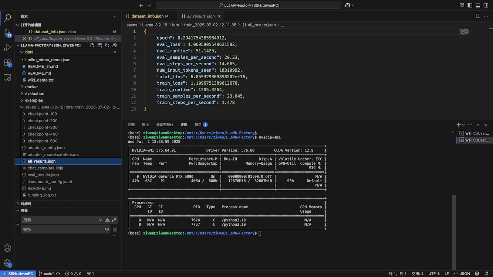
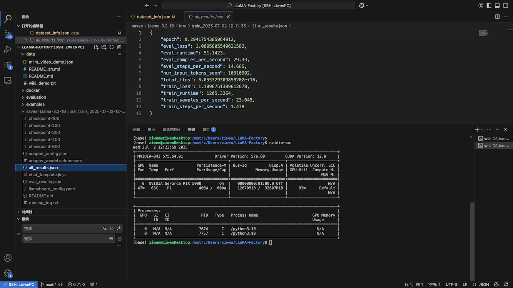
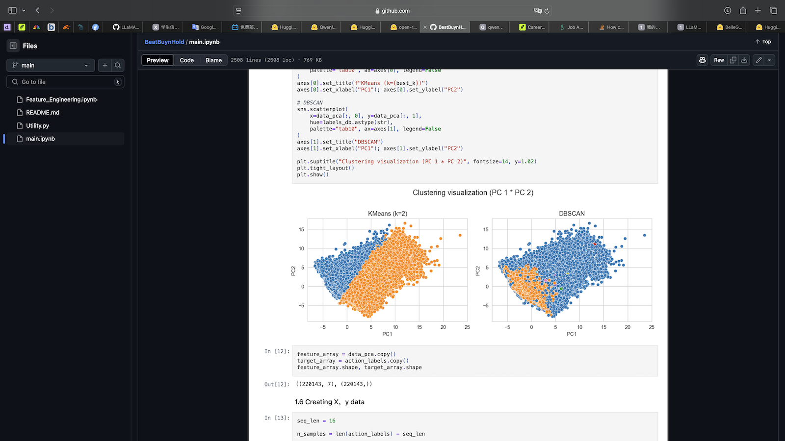
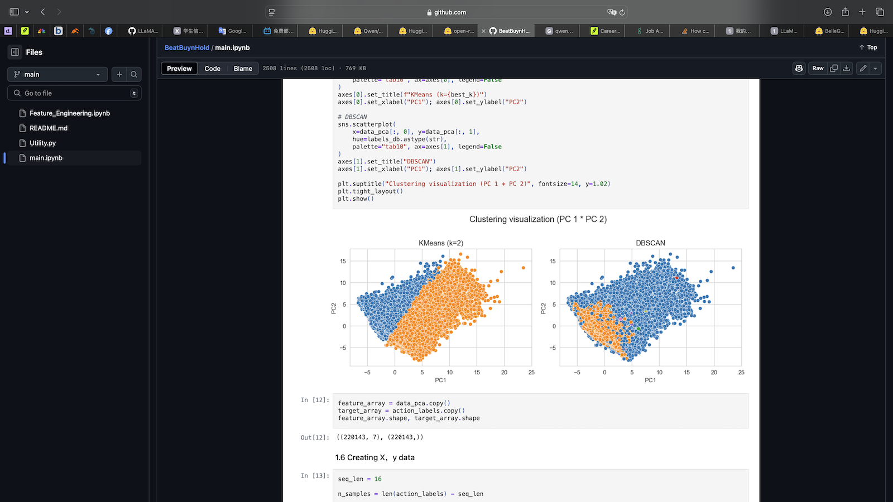
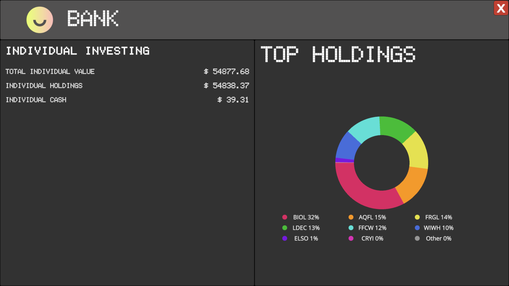
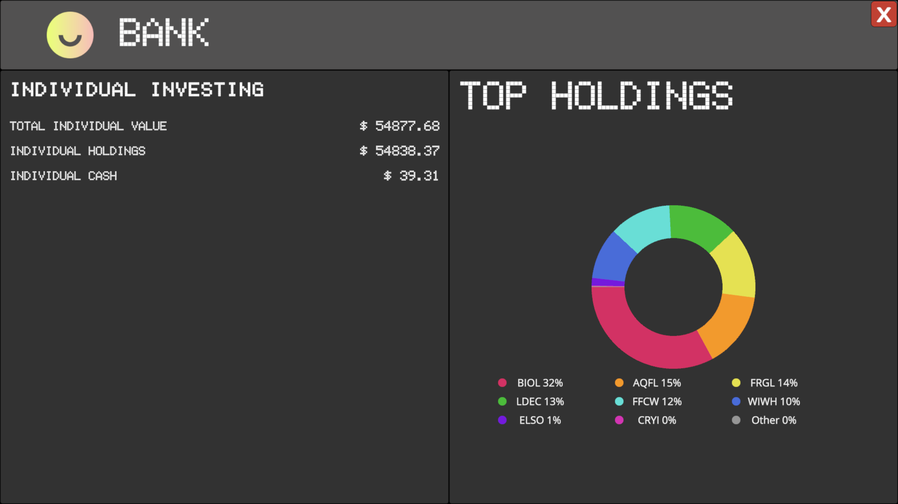
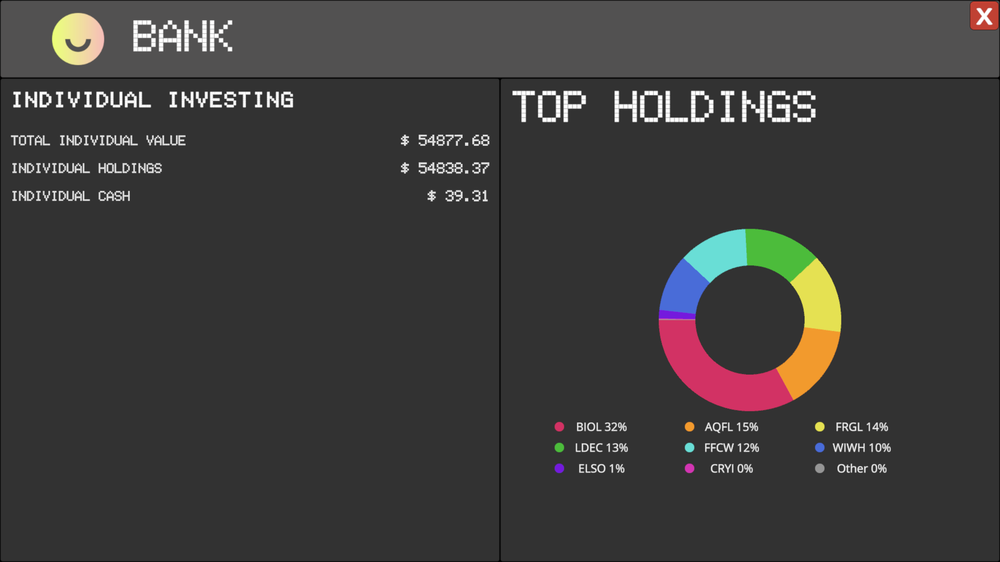
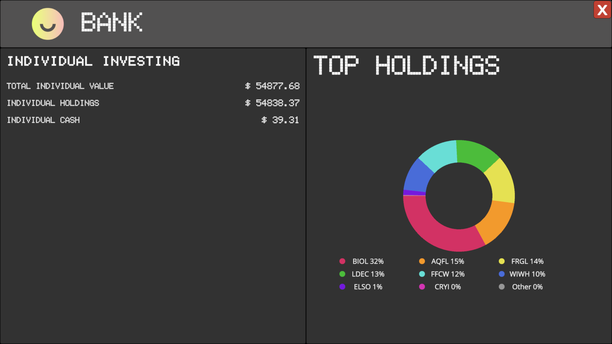

Project Library
项目库
Talkie-Codie
A cross-platform desktop application that converts your voice into optimized prompts using AI-powered speech recognition and language model enhancement. Features real-time voice-to-text transcription with Whisper and intelligent prompt optimization.

Real-Time Quantitative Ingest Pipeline
Built an ingest pipeline to handle high-frequency order flow at 100K orders/sec via async WebSocket I/O and zero-copy buffers. Performed on-the-fly feature aggregation and fed event-time-aligned data into downstream ML models for real-time analysis.
Factor Searching & Analysis Pipeline
Built a Dijkstra's-inspired pipeline to iteratively expand cross-factor space, scoring candidates by global IC, rolling IR, and correlation for latent alpha drivers. Used SVD, UMAP/t-SNE, and KMeans for factor separability.
 

Domain-Specific LLM Training
Collected and cleaned financial reports from SEC, generated Alpaca-style JSONL datasets, and fine-tuned Qwen-2.5-1.5B for ≈1.3x improvement in ROUGE-1/2/L scores on opencompass evaluation.
 


Market Regime Classifier
Built a three-class ensemble distinguishing high-frequency bullish, bearish, and neutral regimes; improved F1-score by 29% over a logistic baseline.
 


 

Stock Market Simulator
Implemented a virtual limit-order-book game and agent-based market participants to study microstructure dynamics and strategy P&L.
Multiplayer Ocean Adventure Game AI
Implemented flocking, pathfinding, and synchronized ship behaviors across the network.